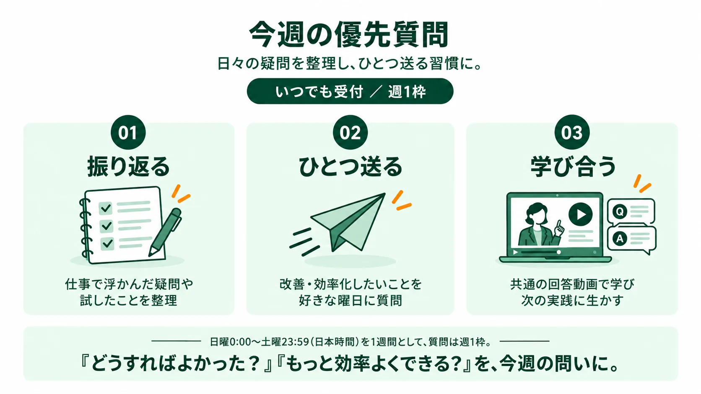
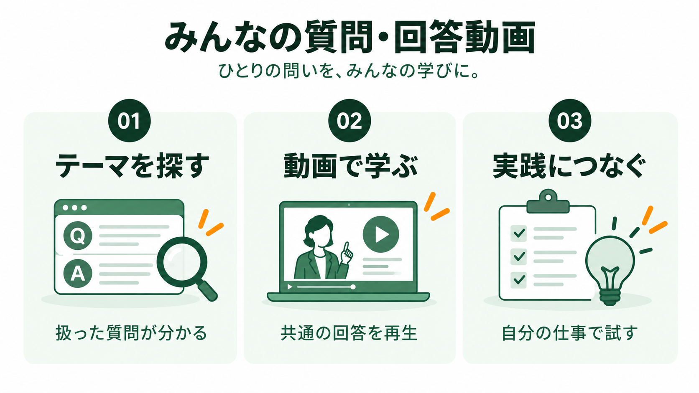
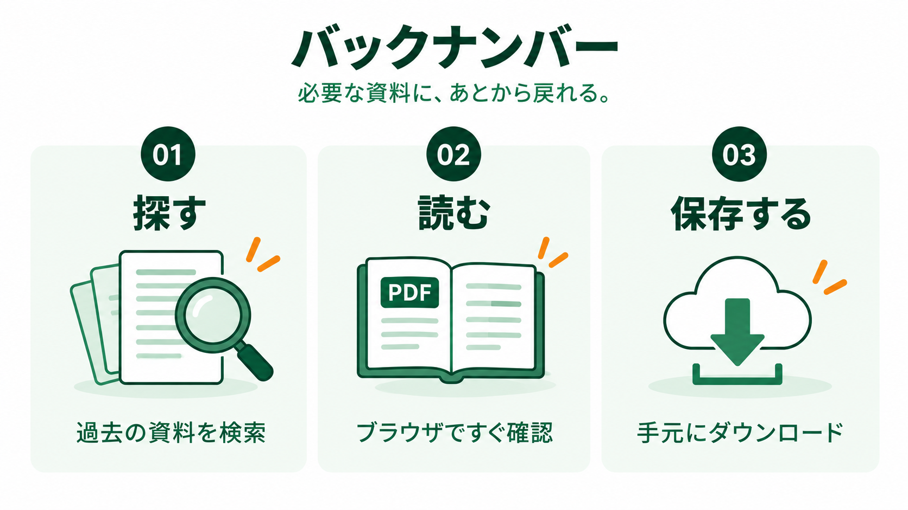
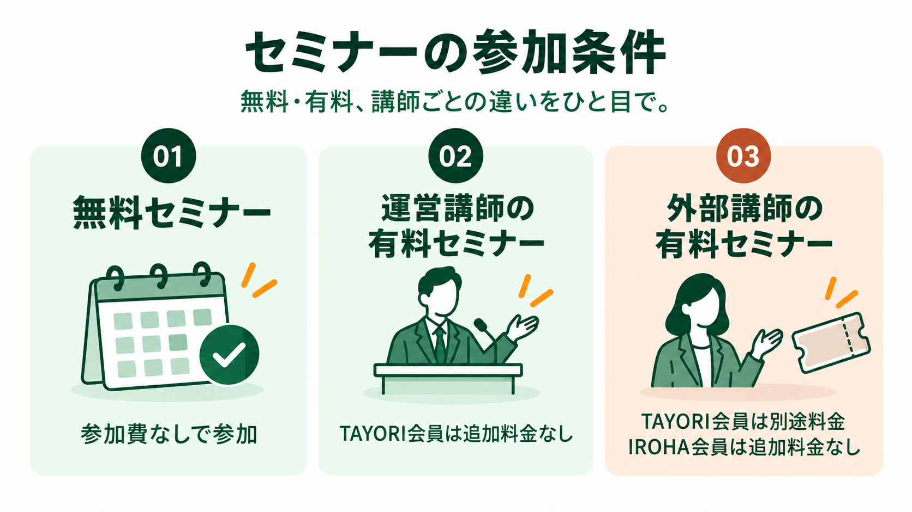

PRIORITY QUESTION
今週の優先質問
いつでも受付・週1枠確認中今週の対象期間期間を確認しています
仕事で浮かんだ疑問や試したことを、好きな曜日に振り返りましょう。「どうすればよかった？」「もっと効率よくできる？」から、今週の疑問をひとつ送ることを毎週の習慣に。類似する質問はまとめて扱い、会員共通の回答動画で次の1週間に生かします。
今週分の質問を確認しています。
TOTONOE TAYORI
会員状態と最新資料を確認しています。
このページは有効なTAYORI会員のみ利用できます。
MEMBER BENEFITS
HOW TO USE
画面を見ながら、資料・質問・回答動画・セミナーの使い方を確認できます。
9分53秒 ／ 2026年10月4日収録
NEWS
お知らせを読み込んでいます。
CONTACT
ログイン、資料・動画の閲覧、契約・請求、サービスの使い方について、お困りのことをお送りください。
AIの使い方・活用の疑問は、今週の優先質問へ。こちらはTAYORIサービスに関する窓口です。
お問い合わせフォームを開くお問い合わせ先を確認しています。
会員登録メール・お名前・問い合わせ種別・具体的な内容をご記入ください。試したこと・利用環境は任意です。
PRIORITY QUESTION
仕事で浮かんだ疑問や試したことを、好きな曜日に振り返りましょう。「どうすればよかった？」「もっと効率よくできる？」から、今週の疑問をひとつ送ることを毎週の習慣に。類似する質問はまとめて扱い、会員共通の回答動画で次の1週間に生かします。
今週分の質問を確認しています。

ANSWER VIDEOS
似た質問をテーマごとにまとめ、TAYORI会員全員に向けて解説します。質問者だけが見る個別回答ではありません。
LAYOUT SAMPLE
下の質問は画面の見え方を確認するための例です。実際の会員質問や公開済み動画ではありません。
類似質問をまとめた回答動画が公開されると、TAYORI会員全員がここから確認できます。
最新号
今週の重要なAIトピックを、仕事に使える形で整理しています。

BACK NUMBERS
入会時期にかかわらず、これまでの資料を確認できます。
条件に合う資料がありません。

MEMBER SEMINARS
無料セミナーも有料セミナーも、開催情報と会員向けの参加条件をここで確認できます。
※ 対象の有料セミナーには会員向けの申込方法を個別にご案内します。外部の申込ページに表示される一般料金・参加条件とは異なる場合があります。

過去回のアーカイブをその場で開いて振り返れます。
音声で過去回を振り返れます。
PAID
現在ご案内できる有料セミナーはありません。公開され次第、参加条件とともにここへ掲載します。
FREE
現在ご案内できる無料セミナーはありません。